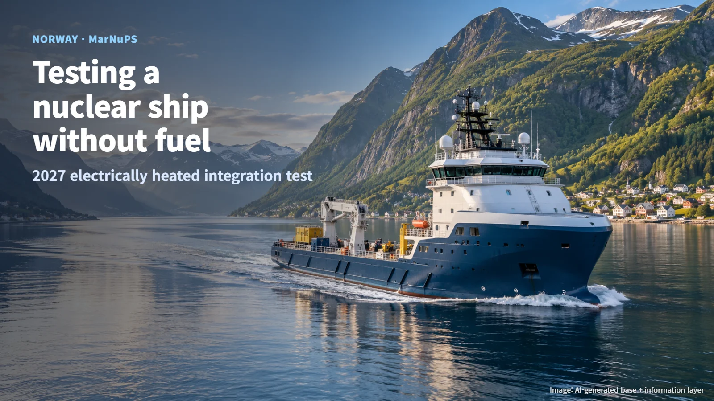
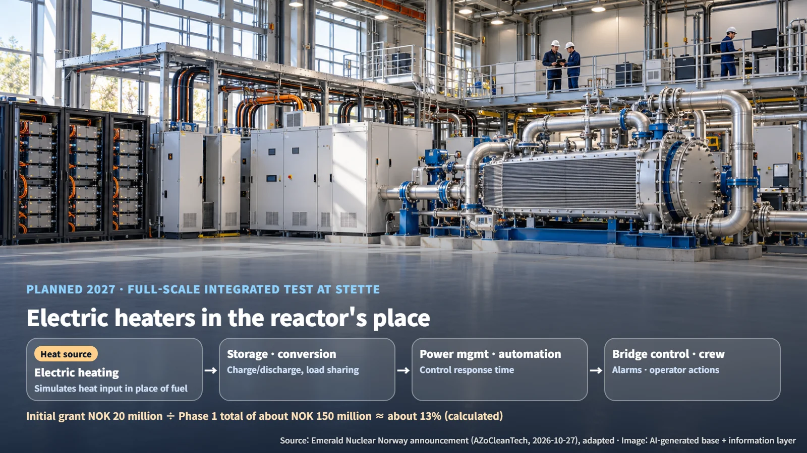
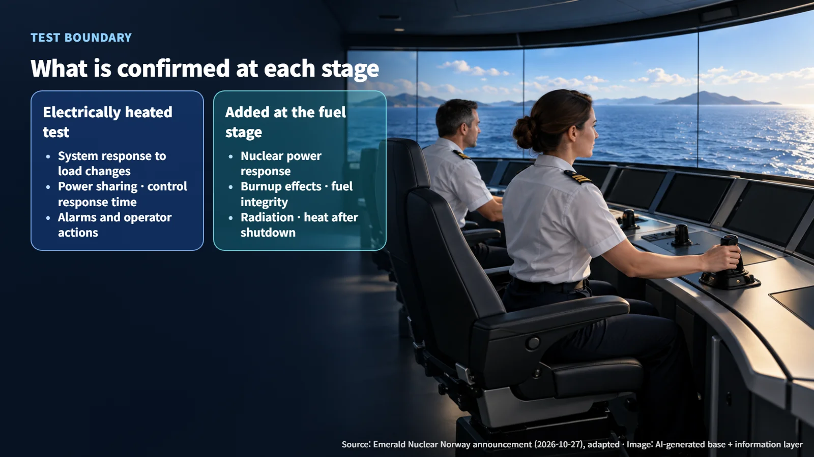
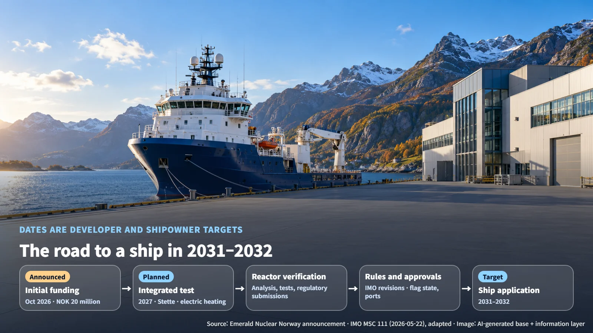

Norway · Marine Propulsion
Testing a Nuclear Ship Without Nuclear Fuel: Norway's MarNuPS Electrically Heated Integration Test
The MarNuPS Pilot will first test a nuclear ship propulsion system on land in 2027, with electric heaters standing in for the reactor's heat.
A nuclear-powered ship brings to mind a reactor floating out at sea, and that picture can feel unfamiliar. Yet the first test for building such a ship begins on land, with no nuclear fuel at all. Our October 27 post on UK port readiness looked at how harbours prepare to receive nuclear ships; today we turn to the ship side and the testing that is under way there.
On October 27, 2026, Emerald Nuclear Norway announced that the MarNuPS (Marine Nuclear Propulsion System) Pilot had secured initial funding of NOK 20 million (Norwegian kroner) from the Research Council of Norway.

Why Test With Electric Heaters in Place of a Reactor
Phase 1, planned for 2027, is to build a full-scale integrated test facility at Stette near Ålesund. There, Emerald's 5 MWe Gem microreactor technology (MWe is a unit of electrical output) will be tied together with energy storage, power conversion, ship power management, automation and bridge controls (the bridge is where the ship is steered). Where the reactor would sit, an electric heating system takes the place of nuclear fuel and reproduces the heat of shipboard operating conditions.
The strength of this approach is that the test team can set the heat input exactly as they choose. Engineers can see how batteries, power converters and automatic controls respond when heat rises or falls, or when the ship's power demand suddenly changes, and they can tune all of this on land before any reactor goes aboard. The rating of the test heaters and the detailed thermal-hydraulic conditions have not been disclosed.

Phase 1 is estimated to cost about NOK 150 million in total, including the participating organizations' own investment. Working out the share of the initial grant gives NOK 20 million ÷ NOK 150 million ≈ 0.13, or about 13%, a little under one-seventh of the Phase 1 budget. The project is now at the stage of having secured research funding to begin testing, and the total budget includes the partners' own investment. How the remaining funding is put together is the next thing to watch.
What Gets Measured: Five Test Scenarios
The published test scope covers normal operation, rapid changes in power demand, transient and stress conditions, system performance, and crew interaction. A transient condition is one in which the operating state swings sharply over a short time.
The key to the measurements is timing. When the charge and discharge records of the energy storage system and the control signals are aligned on the same clock as the heat and power measurements, engineers can read off how much power each device carried when the load changed (load sharing) and how long it took from a command to the actual response (response delay). Picture an electric heater producing heat in place of a reactor inside the test hall, while a crew member at the bridge console responds to an alarm.
This is also why several organizations come together in a single test. Emerald Nuclear handles reactor technology and nuclear integration, VARD Group handles ship design and integration, and Vard Electro handles power management and automation. Island Offshore provides real operating scenarios and crew input, NTNU covers nuclear and thermal-hydraulic modeling, Imperial College London covers structural integrity, and Maskindynamikk covers instrumentation, diagnostics and condition monitoring. Seeing how a whole ship responds takes the side that makes heat, the side that distributes electricity, the side that sails the ship, and the side that calculates and measures, all working together.
Moving On to the Nuclear Fuel Stage
Setting the two stages side by side makes the role of this test clear.
- What the electrically heated test confirms: system response to load changes, power sharing, control response time, alarms and operator actions
- What the nuclear fuel stage must additionally demonstrate: power response driven by nuclear reactions, changes in characteristics as fuel burns up, the radiation environment, fuel integrity, and heat generation after shutdown
The link between the two is the way heat is put in. A reactor keeps producing heat for some time after it stops, as fission products decay (decay heat). Once it is documented how the time-varying heat fed into the electric heaters corresponds to the real reactor's power changes and its assumed heat generation after shutdown, it becomes clear to which operating and accident conditions the integrated test results can be applied. The nuclear fuel stage items are then demonstrated through reactor analysis and testing and through regulatory review submissions. This test is, in effect, the ship-side half of the verification, paired with verification of the reactor itself.

The Sequence Toward the 2031 Target
Island Offshore aims to be the first shipowner to adopt the system, with a target of 2031–2032 for application on a vessel. The path runs from the 2027 integrated test through verification with the reactor and preparation for real-ship design and operation, to application on a ship. Counting the time gives 2031 − 2027 = 4 years and 2032 − 2027 = 5 years, so these stages have to be completed one after another within roughly four to five years.
International rules are moving as well. At its 111th session in May 2026, the IMO Maritime Safety Committee (MSC) endorsed a work plan for developing safety regulations for greenhouse-gas reduction technologies under the Sub-Committee on Ship Design and Construction (SDC). It includes developing and revising the existing nuclear-related safety regulations and work on guidelines for battery energy storage systems. Because MarNuPS tests nuclear technology and energy storage together, it touches both lines of work. Before application on a ship, the remaining tasks are to confirm ship-specific design criteria, the revised editions of the international rules that will apply, and the approval boundaries with the flag state (the country where the ship is registered), port authorities and nuclear regulators.

MarNuPS has now secured research funding, and the next milestones are building the Stette test facility in 2027 and setting out the follow-on funding and licensing path. The first step toward a nuclear ship starts in a test hall on land, learning how a whole ship exchanges heat and electricity.